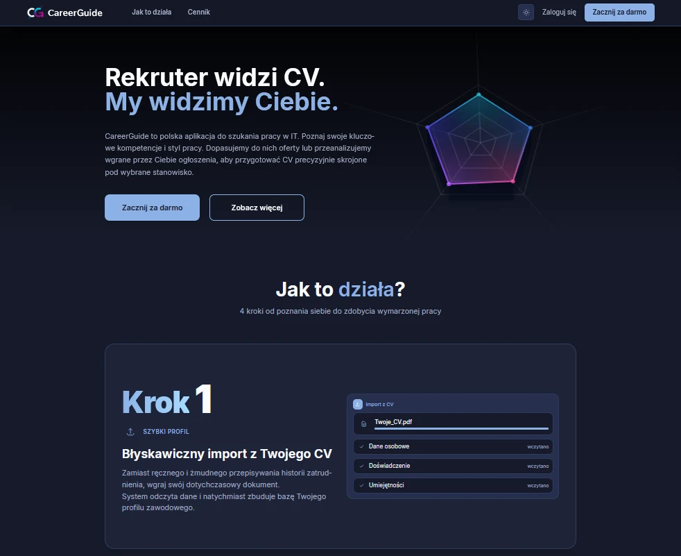
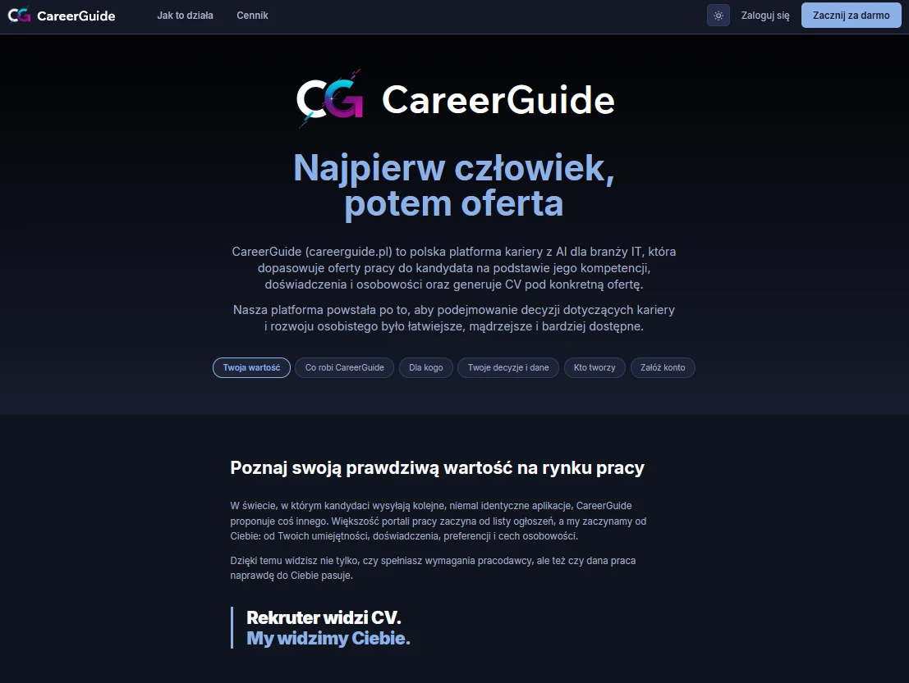
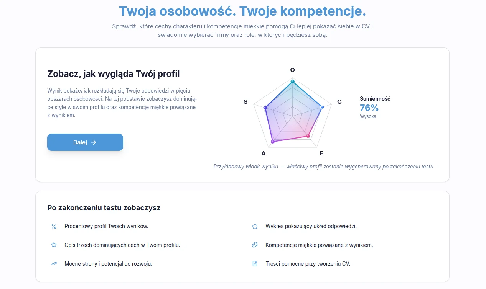

Projekt komercyjny
CareerGuide
Aplikacja, która łączy profil zawodowy, osobowość i AI: dopasowuje oferty pracy i przygotowuje CV pod konkretne ogłoszenie.
Landing page i podstronyStrona główna produktu „Rekruter widzi CV. My widzimy Ciebie.” i jej podstrony.
Moduł testu osobowościTest predyspozycji zawodowych w wersji 20 lub 50 pytań. Wynik procentowy na pięciu skalach, wykres radarowy i trzy dominujące cechy. Profil trafia do dopasowania ofert i pomaga opisać kompetencje miękkie w CV.
OtwartośćSumiennośćEkstrawersjaUgodowośćStabilność


